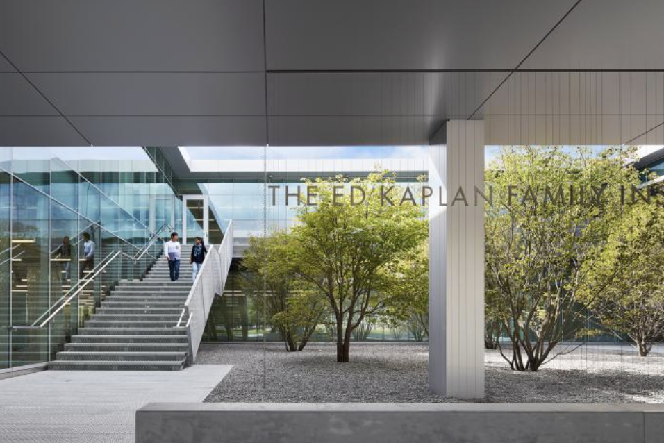

Facility Overview

The Kaplan Institute is a hub for interdisciplinary research, hardware prototyping, and systems work. Students use it to connect lecture material with practice. Inside are computer workstations, meeting rooms, and shops for building physical and digital prototypes.
For information technology students, the building matters because software does not live only on a laptop. Teams test ideas next to people from engineering, design, and business. That mix is closer to a workplace than a single classroom.
I chose this theme because I want a career in software and infrastructure, and I learn faster when I can see labs, racks, and student projects in person. The video below is a walkthrough of related engineering corridors and workspaces on campus.
Academic and Research Resources
Innovation and Prototyping Spaces
Open work areas and network access let cohorts design and test applications together. Workstations can be set up for network simulation, embedded hardware tests, and software build pipelines. Students can move from a whiteboard sketch to a running demo in the same building.
Server Infrastructure and Testing
Beyond lecture halls, engineering spaces include laboratory racks, switches, and virtualization hosts. Using physical equipment helps connect software logic to hardware. That is useful for courses in networking, operating systems, and cloud computing.
Student Collaboration
Group rooms support project meetings, code reviews, and design critiques. Interdisciplinary teams can include software developers, network students, and data engineers. Shared space reduces the gap between a class assignment and a portfolio project.